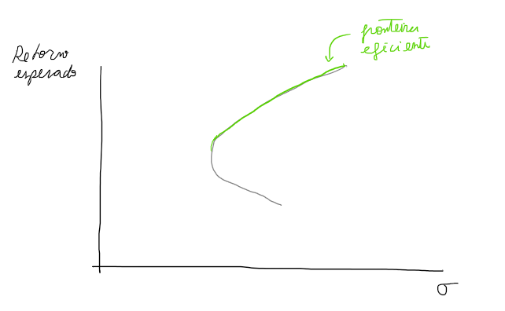
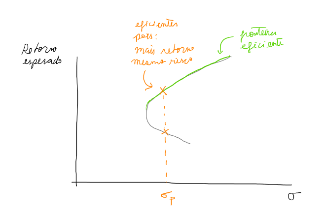
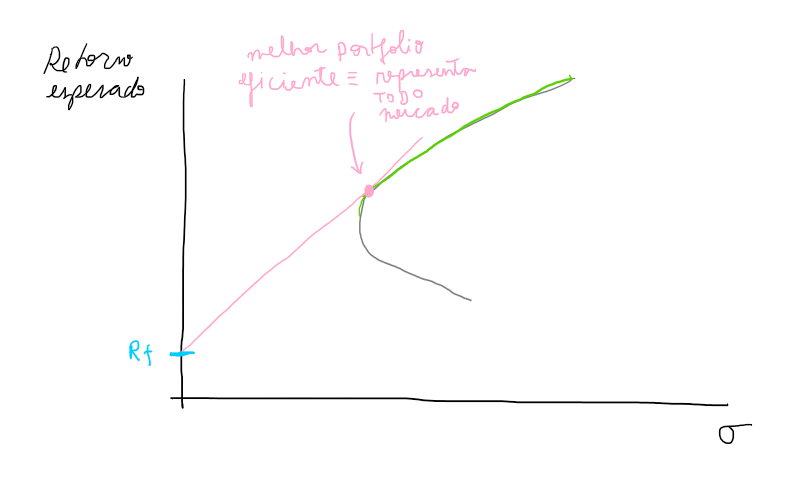

Portfolio theory, CAPM and Nassim Taleb
Portfolio theory
Markowitz calculou o desvio padrão de uma carteira por meio da covariança entre os ativos que compõem a carteira. Com isso obteve uma relação entre retorno e desvio padrão da carteira, que entendia como medida de risco.
Além disso, outra conclusão importante: o risco de uma carteira não é simplesmente a soma da variância de cada ativo mas a soma das covariâncias. Portanto, é possível a combinação de dois ativos com retornos voláteis para gerar uma carteira menos volátil se por exemplo quando um ativo cai de preço o outro aumenta, ou seja, são correlacionados negativamente. Dai surgiu a ideia central da diversificação do risco não sistêmico.
Fronteira eficiente
Ao plotar todas as possíveis combinações de portfolios (retorno e desvio padrão), chega-se a uma figura com uma fronteira bem definida. Essa fronteira tem duas pernas, uma superior e outra inferior. Existem portfolio que apresentam o mesmo risco mas fornecem retornos distintos, um maior que o outro. Nesse caso, o que apresenta maior retorno está no ramo eficiente da fronteira. Portanto, a parte superior dessa fronteira é dita fronteira eficiente.
Portfolios eficientes
Portfolios eficientes (portfolio ótimo), assim chamados por Markowitz, são aqueles localizados na fronteira eficiente. Esses portfolios são aqueles que para um nível de risco proporcionam o maior retorno esperado.
Portfolio tangente
Dada a opção para um investidor em ter uma carteira com um ativo sem risco e um ativo (ou conjunto) de risco. Por que precisamos dessa possibilidade? Pois no desenvolvimento do CAPM existe um argumento de equilíbrio considerando o agregado, todos os investidores. Como nem todos os investidores estarão com 100% do patrimônio em ações, precisa de uma alternativa para se prosseguir com o argumento.
Nesse caso, o investidor com parte em renda fixa está de fato emprestando esses recursos para alguém1. No gráfico retorno esperado por desvio padrão, essa escolha em ter uma carteira com essa combinação é representada por uma reta. A proporção entre essas duas classes de ativos define onde, na reta, o investidor está com relação ao risco e retorno esperado.

Existe um portfolio $S$ que é a melhor opção de ativo de risco a se ter em combinação com renda fixa. Esse portfolio é o ponto tangente entre a linha e a curva que define os possíveis portfolios, chamado de portfolio tangente. Esse é o portfolio no qual:
-
Todos ($n$) os participantes do mercado o possuem pois ele do ponto de vista racional2 é o melhor (mais risco com menos retorno);
-
Os participantes do mercado representam a demanda;
-
Como todos os participantes do mercado possuem o mesmo portfolio M, então do outro lado existe uma oferta que engloba todas as empresas;
-
A oferta é representada pelo valor total de todas as empresa $V_t=V_1+V_2+V_3+...+V_m$;
-
Então $n(S)=V_t$ e portanto cada investidor possui uma fração do valor total das empresas;
-
O portfolio $S=V_t/n$ é a divisão do valor total das empresas pelo número de participates no mercado;
-
A única maneira de $S$ ser igual para todos os $n$ investidores é se o portfólio $S$ for igual a um portfólio que contém todas as empresas e é ponderado pelo valor de mercado dessas empresas;
$$S = V_1\frac{1}{n} + V_2\frac{1}{n}+ ... + V_m\frac{1}{n}$$
Essa lógica mostra um argumento de equilíbrio, oferta e demanda, que estende a teoria do portfólio de um investidor individual para todo o mercado. A conclusão é que o portfolio tangente é o melhor entre os portfolios eficientes e consiste em ter todo o mercado ponderado pelo market cap de cada empresa.
Notar que essa reta tangente é a mais vertical possível, indicando maior retorno possível por nível de risco. Significa uma otimização da média-variância, não quero só o maior retorno (médio), quero o maior retorno por unidade de risco (variância). Essa reta tangente é denominada capital market line (CML).
Capital asset pricing model (CAPM)
O que é CAPM? um modelo para precificar ativos, como o nome sugere: capital asset pricing model. É uma teoria que descreve o equilíbrio entre retorno esperado e risco.
Como surgiu? O retorno de um portfolio é relacionado com o retorno ponderado dos ativos nesse portfolio. E o risco do portfolio? Não é simplemente uma ponderação das variâncias dos ativos, depende também da correlação entre eles (Markowitz).
Qual a relação com teoria de portfolio e o CAPM?
Portfolio Theory focused on the actions of a single investor with an optimal portfolio. You wondered what would happen to risk and return if everyone followed Markowitz and built efficient portfolios. – Sharpe
A CML fornece o retorno esperado com da carteira com ativo sem risco (Renda fixa) e ativo com risco (carteira de mercado). O retorno base é o recebido pela renda fixa e o excesso é dado pelo retorno do mercado menos a renda fixa, prêmio de risco. Esse prêmio de risco é ponderado pela razão entre o desvio padrão do portfólio e o desvio padrão do mercado.
$$R_p = R_f + \frac{\sigma_p}{\sigma_m} (R_m - R_f)$$
O desvio padrão do portfolio é a covariância dos ativos no portfólio, no caso renda fixa e mercado.
I said what if everyone was optimizing? They've all got their copies of Markowitz and they're doing what he says. Then some people decide they want to hold more IBM, but there aren't enough shares to satisfy demand. So they put price pressure on IBM and up it goes, at which point they have to change their estimates of risk and return, because now they're paying more for the stock. That process of upward and downward pressure on prices continues until prices reach an equilibrium and everyone collectively wants to hold what's available. At that point, what can you say about the relationship between risk and return? The answer is that expected return is proportionate to beta relative to the market portfolio. – Sharpe
Nassim Taleb
Fooled by randomness
Critica o uso da variância como medida de risco e para isso assume a distribuição normal dos retornos históricos.
Antifragil
Note one fallacy promoted by Markowitz users: portfolio theory entices people to diversify, hence it is better than nothing. Wrong, you finance fools: it pushes them to optimize, hence overallocate. It does not drive people to take less risk based on diversification, but causes them to take more open positions owing to perception of offsetting statistical properties…
Markowitz argumenta e produz evidência em favor da diversificação para reduzir o risco não sistêmico (diversificável). Taleb fala que é uma falácia achar que diversificação reduz risco, pois estamos olhando o risco por meio de correlações. E ele explica em seguida que correlações variam no tempo,
I noticed as a trader— and obsessed over the idea— that correlations were never the same in different measurements. Unstable would be a mild word for them: 0.8 over a long period becomes −0.2 over another long period. A pure sucker game. At times of stress, correlations experience even more abrupt changes— without any reliable regularity, in spite of attempts to model “stress correlations.”
Footnotes
Referencias
-
Principles of Corporate Finance, Richard Brealey, Stewart Myers, and Franklin Allen
-
Interview - Nassim Taleb « portfolio theory: it's a bit what astrology was to…
-
When it Comes to Market Liquidity, what if Private Dealing System is Not "The…
-
William F. Sharpe's Contributions to Financial Economics on JSTOR
Se alguém empresta recursos, alguém mutua (pega emprestado). Essa é uma hipótese central para desenvolver o modelo CAPM, assume-se que há amplo acesso a financiamento pela taxa livre de risco. A liquidez é ampla, grátis e continua.
Essa é a hipótese de mercado eficiente que introduz o "homo economicus". Não é uma verdade absoluta, mas não há razão para pensar o contrário do ponto de vista racional.